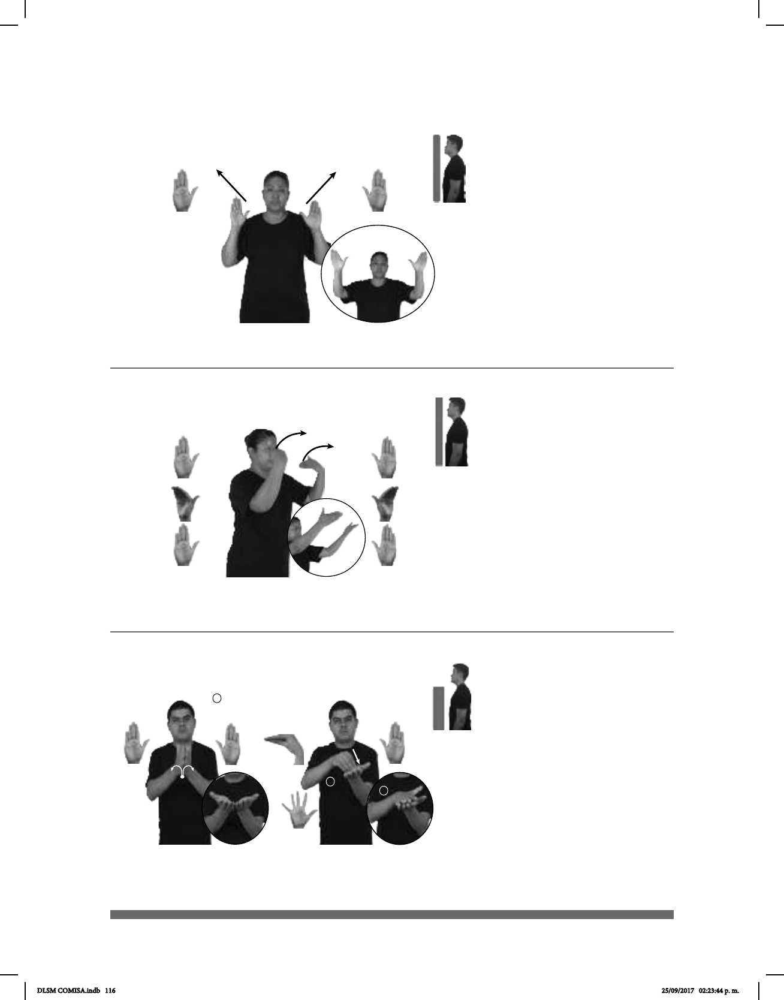

116
(B-P 16)
NOS-VEMOS AEROPUERTO
allá
Nos vemos en el aeroropuerto.
(B-P 17) Afuera
1
2
pro-NOSOTROS IR JUGAR AFUERA
Vamos a jugar afuera.
(B-P 18)
CITA DOCTOR
derecha
ESCRIBIR ANOTAR-AGENDA
El doctor anota la cita en la agenda.
Seña: SS
B-P.2
Palmas hacia afuera.
De los hombros a la
cabeza, del centro a los lados.
Recto.
sust. m. Área
destinada al aterrizaje y despegue de
aviones dotada de instalaciones para el
servicios a los pasajeros.
Seña: SS
Seña que pasa de B-P.2
a B-P.8 y a B-P.2
Las palmas inician hacia afuera
y terminan hacia adentro.
A la altura del rostro.
Las muñecas giran y cambian
la orientación de las manos, pasan de mostrar
las palmas a mostrar el dorso y después recto
hacia enfrente.
1. adv. En lugar público o en la
parte exterior. 2. loc. adv. En un lugar que
se encuentra en el exterior, puede ser de
propiedad pública o privada.
Seña: SC: I. SS; II. SB; III. SS
I. B-P. 2; II. MD O.4,
MB B-P.2; III. 5.1
I. Inicia con palmas
encontradas frente a frente y termina con
palmas hacia arriba; II. MD palma hacia
abajo, MB palma hacia arriba; III. Las
palmas se encuentran frente a frente.
I., II. y III. A la altura del pecho.
I. Las manos parten de un
mismo punto y luego se abren hacia los
lados; II. Los dedos de MD golpean a la MB
en línea recta; III. Las manos se encuentran
frente a frente y se tocan.
sust. f. Libro, cuaderno o
dispositivo electrónico en el que se apunta,
para no olvidarlo, aquello que se ha de hacer.
DLSM COMISA.indb 116 25/09/2017 02:23:44 p. m.